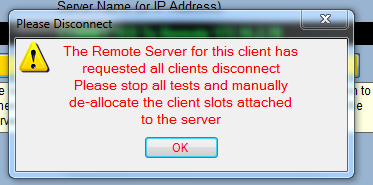

A server uses the "Disconnect Clients" button on the Server Setup side of the Remote Client Setup window to initiate the disconnection process with its clients. When pressed, clients receive a message telling them that the server has disconnected from them. Clients are still able to reserve/release slots after receiving the disconnect message. To finalize the disconnection, the client must restart ActivATE.

Main Toolbar Remote Client Setup Client Side Server Side Running Tests
Astronics Test Systems
Last updated on 1/14/15 M. Buccat